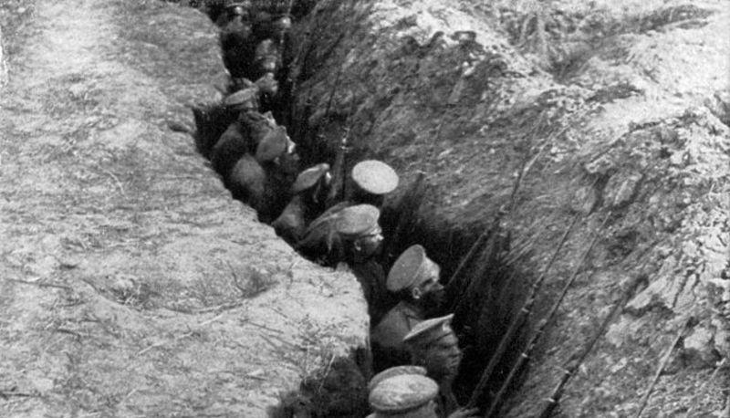

La Prima Guerra Mondiale
L'Europa allo sbando

Agli inizi del Novecento, l'Europa appariva come il centro del mondo. Le grandi potenze coloniali dominavano vasti territori, la scienza e la tecnologia promettevano un futuro radioso, e le classi borghesi vivevano nell'opulenza della Belle Époque. Eppure, sotto questa superficie brillante, covavano tensioni profonde che sarebbero esplose nel più terribile conflitto che il continente avesse mai conosciuto.
Le radici del conflitto
Un equilibrio precario
L'Europa del 1914 era divisa in due blocchi contrapposti: da un lato la Triplice Alleanza (Germania, Austria-Ungheria e Italia), dall'altro la Triplice Intesa (Francia, Russia e Gran Bretagna). Questo sistema di alleanze, creato per mantenere la pace, finì invece per trasformare ogni crisi locale in una minaccia continentale.
Altri fattori contribuirono all'escalation:
- I nazionalismi esasperati, soprattutto nei Balcani, dove l'Impero austro-ungarico cercava di contenere le spinte indipendentiste
- La corsa agli armamenti, con le principali potenze che aumentavano a dismisura i propri eserciti
- Le mire coloniali che alimentavano rivalità tra Francia, Germania e Gran Bretagna
La guerra totale
Ciò che doveva essere una "guerra lampo" si trasformò presto in un logorante conflitto di posizione. Milioni di soldati si trovarono a combattere nelle terribili condizioni delle trincee, tra fango, malattie e bombardamenti continui.
Il fronte italiano
L'Italia inizialmente rimase neutrale, per poi entrare in guerra nel maggio 1915 a fianco dell'Intesa. I combattimenti lungo l'Isonzo e sul Carso furono particolarmente cruenti, con perdite enormi da ambo le parti. La disfatta di Caporetto nell'ottobre 1917 segnò un momento drammatico, seguito però dalla riscossa italiana nella battaglia di Vittorio Veneto un anno dopo.
La società in guerra
Per la prima volta, l'intera popolazione fu coinvolta nello sforzo bellico. Con gli uomini al fronte, le donne assunsero ruoli cruciali:
- Nelle fabbriche di munizioni
- Nei servizi pubblici
- Nella produzione agricola
- Come infermiere al fronte
Questa mobilitazione femminile segnò un passo importante verso l'emancipazione delle donne nella società.
Un mondo trasformato
Il costo umano
Quando finalmente le armi tacquero l'11 novembre 1918, il bilancio era spaventoso:
- Oltre 16 milioni di morti
- 21 milioni di feriti, molti dei quali mutilati a vita
- Intere regioni dell'Europa devastate
Le conseguenze politiche
I trattati di pace ridisegnarono la carta dell'Europa:
- Crollo degli imperi tedesco, austro-ungarico, ottomano e russo
- Nascita di nuovi stati nazionali in Europa centrale
- La Germania umiliata dal trattato di Versailles
In Italia, nonostante la vittoria, molti parlarono di "vittoria mutilata" per le aspettative deluse, alimentando malcontento che avrebbe favorito l'ascesa del fascismo.
La fine di un'epoca
La Prima Guerra Mondiale segnò la fine definitiva dell'Ottocento e l'inizio del mondo contemporaneo. Nulla sarebbe stato più come prima:
- Le monarchie tradizionali lasciarono il posto a repubbliche e regimi autoritari
- La società cambiò profondamente, con l'emergere delle masse come protagoniste della vita politica
- L'economia mondiale vide il declino dell'Europa e l'ascesa degli Stati Uniti
- Le donne, dopo il loro contributo fondamentale, avviarono un percorso di emancipazione irreversibile
Le ferite di questa guerra non si rimarginarono mai completamente. A soli vent'anni di distanza, l'Europa sarebbe precipitata in un conflitto ancora più terribile. Per questo, ricordare la Grande Guerra non è solo un esercizio di memoria, ma un monito per il futuro.